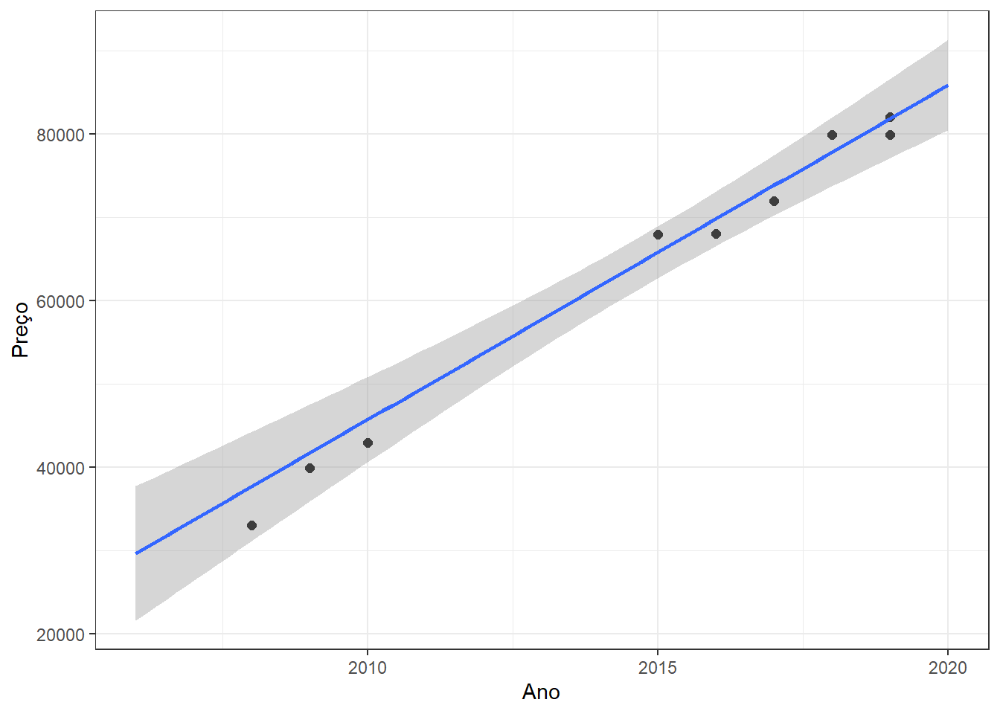
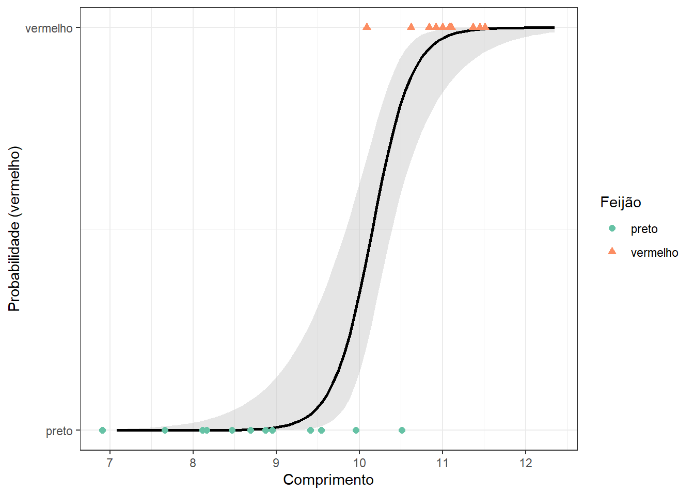
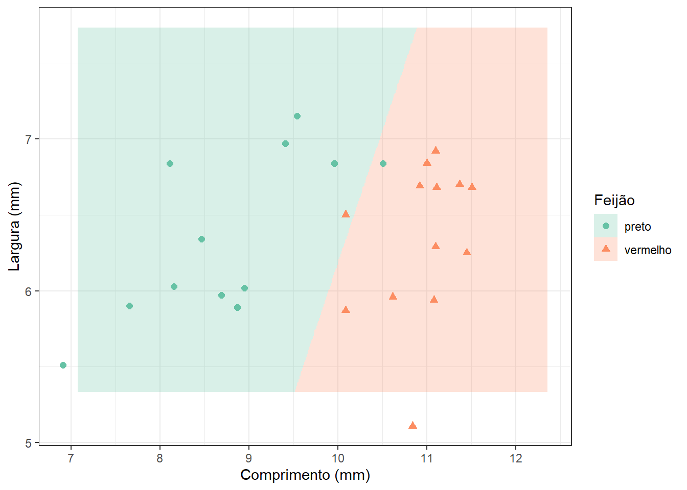
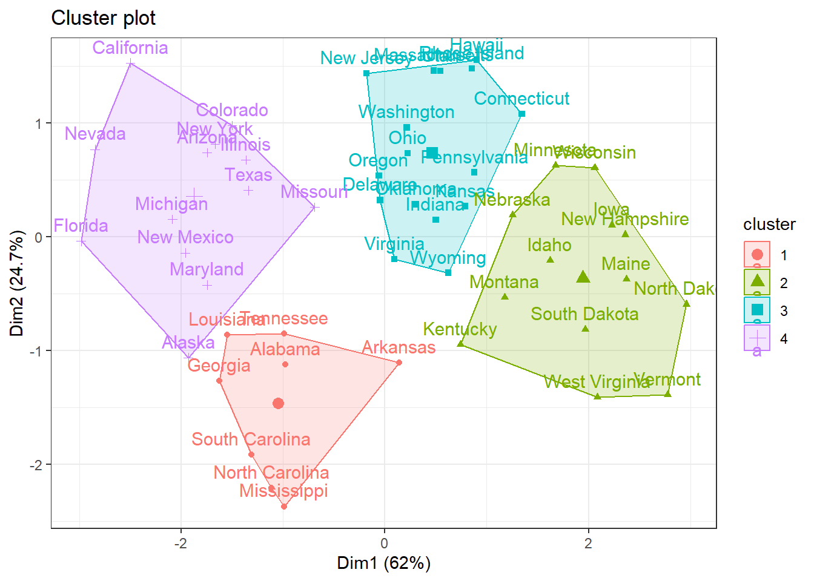
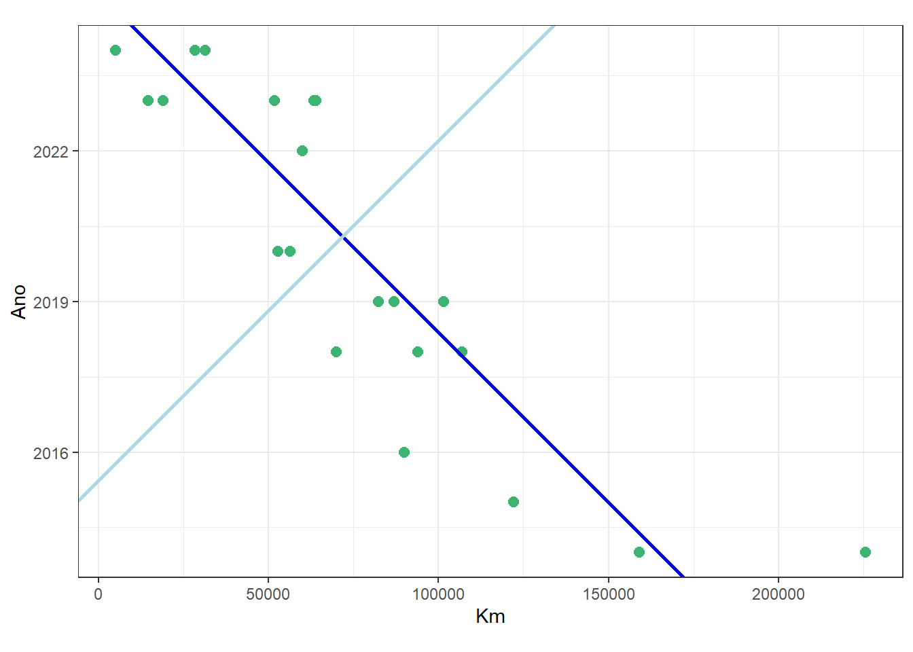

1 Introdução ao aprendizado supervisionado
1.1 Aprendizado
No contexto da ciência de dados (data science) o aprendizado consiste em aprender ou mimetizar um determinado comportamento a partir de dados. Mais especificamente, no caso supervisionado, este comportamento está relacionado à previsão de uma determinada resposta de interesse em função de outras variáveis ou atributos disponíveis. Esta resposta pode ser quantitativa, ou seja, medida em uma escala real, ou qualitativa, constando de um conjunto finito de possibilidades.
Importante
Apesar de atualmente disponíveis em abundância, tanto nas organizações privadas quanto em domínio público, nem sempre os dados estão prontos para análise.
Existem dois campos que regem a teoria do Aprendizado:
- Estatístico (statistical learning);
- de Máquina (machine learning).
Alguns métodos surgiram no contexto do Aprendizado estatístico, subcampo da Estatística, tais como as árvores de decisão, aprendizado por reforço e máquinas de vetores de suporte, enquanto outros surgiram no contexto da Inteligência Artificial, subcampo das Ciências da computação, tais como as redes neurais e o aprendizado profundo. Hoje é difícil separar ambos campos, apesar de o aprendizado de máquina ser muito mais popular.
1.2 Um pouco de história
Alguns teóricos importantes para o aprendizado surgiram da estatística frequentista e paramétrica. Desta época ainda há métodos utilizados atualmente, por exemplo a análise discriminante linear de Fisher.
Nota
A estatística paramétrica engloba métodos que pressupõem uma distribuição de probabilidade para os dados.
Willian Gosset (Student), 1908-1909, criou o teste t e a distribuição t de Student quando trabalhava na cervejaria Guiness. Sua intenção era criar uma aproximação da distribuição normal para amostras de tamanhos limitados. Ronald Fisher, 1920-1940, cunhou vários testes e conceitos estatísticos importantes, como a análise de variância (ANOVA), a análise discriminante linear, o p-valor, entre outros. Seus principais desenvolvimentos foram realizados especialmente enquanto trabalhava na estação agrícola Rothamsted Research no Reino Unido. George Box, 1948-1992, é considerado uma dos maiores estatísticos do século XX, tendo desenvolvido trabalhos e métodos em controle de qualidade, planejamento de experimentos, séries temporais e inferência Bayesiana. Cunhou a famosa frase: “All models are wrong, some are usefull”.
Alguns estatísticos foram importantes para definir termos que hoje são populares no contexto da teoria do aprendizado supervisionado e mais amplamente da ciência e análise de dados. John Tukey, 1962-1977, cunhou o termo análise exploratória de dados, com o objetivo de incentivar a ênfase em gráficos, tabelas e limpeza de dados para resumir dados e apontar suas tendências. Jeff Wu formulou o termo data science em 1980 e, inclusive, recomendou que a área de conhecimento estatística fosse renomeada para ciência de dados. A Figura 1.1 expõe fotos dos estatísticos Tukey e Wu.
Vários bioestatísticos de Stanford tiveram contribuições importantes no campo do aprendizado estatístico. Bradley Efron desenvolveu nas décadas de 70 e 80 o método bootstrap, um método que visa estimar o erro a partir da amostragem com reposição. Tal abordagem é amplamente usada em inferência e em aprendizado de máquina. Jerome Friedman desenvolveu o método de aprendizado por reforço de gradiente. Trevor Hastie propôs os modelos aditivos generalizados e Robert Tibshirani propôs a regularização via LASSO. Estes autores, Figura 1.2, tiveram outras contribuições importantes na estatística e computação.

Leo Breiman, 1928-2005, Figura 1.3, foi um estatístico americano muito importante para o aprendizado supervisionado, tendo criado o algoritmo floresta aleatória, além de ter publicado um artigo importante falando sobre as duas culturas da modelagem: a estatística e a computacional. Basicamente, ele defendia que enquanto a cultura estatística buscava um modelo por trás dos dados, a algorítmica dá ênfase à qualidade da previsão, sugerindo que a segunda seria mais interessante, especialmente para problemas complexos. Também destacou a importância da validação cruzada para seleção de modelos. Por fim, ele sugere que o truque do cientista (de dados - acréscimo meu) é estar aberto a usar uma ampla variedade de ferramentas. Acreditamos que este curso vai muito ao encontro de seu pensamento, embora a necessidade de explicar a importância das variáveis em modelos tem crescido com o tempo.
A densa teoria do aprendizado estatístico foi cunhada pelo matemático russo Vladimir Vapnik, Figura 1.4, visando obter um modelo preditivo a partir dos dados. Inicialmente não foi proposto um método específico, mas o arcabouço teórico necessário para sustentar a capacidade de generalização de modelos obtidos a partir de amostras limitadas, porém suficientes. Posteriormente, Vapnik e co-autores propuseram as máquinas de vetores de suporte, método aplicado com sucesso até hoje em problemas de aprendizado supervisionado. Seus principais trabalhos foram publicados na década de 90.
Nomes importantes da computação incluem Christopher Bishop, com grande contribuição em redes neurais e Andrew Ng, Figura 1.5 com contribuições e militância recentes em aplicações, pesquisa e ensino de aprendizado profundo e inteligência artificial.

1.2.1 Um brasileiro importante
Carlos Guestrin, Figura 1.6, é um brasileiro que tem feito um excelente trabalho na área de aprendizado por reforço. Guestrin é professor da Universidade de Stanford, foi diretor sênior de Machine Learning da Apple (2016-2021) e é co-criador do impressionante método recente de reforço por gradiente extremo (extreme gradient boosting), usado com sucesso em aprendizado supervisionado.
A seguir será classificado o aprendizado supervisionado, sendo expostos exemplos práticos de aplicação.
1.3 Aprendizado Supervisionado
Definição
O aprendizado supervisionado consiste na aproximação ou treinamento de um modelo para prever uma variável dependente ou resposta de interesse a partir de dados.
Seja um conjunto de variáveis de entrada, independentes ou preditores \(\mathbf{x} = [x_1, x_2, ..., x_k]^T\) e uma variável dependente ou supervisora \(y\). Dado uma amostra de observações para tais variáveis, \((\mathbf{x}_1,y_1), (\mathbf{x}_2,y_2),..., (\mathbf{x}_n,y_n)\), o aprendizado supervisionado visa prever o comportamento ou resultado de \(y\), considerando valores futuros de \(\mathbf{x}\), \(\mathbf{x}_0\).
Nota
Neste curso, de forma geral \(\mathbf{x}\) consiste no vetor de preditores, \(\mathbf{x} = [x_1, x_2, ..., x_k]^T\), conforme já explicitado, \(\mathbf{x}_i,y_i\) consiste em uma observação dos preditores e da resposta associada, \(i=1,...,n\), \(\mathbf X_{[N\times k]}\) consiste na matriz de observações dos preditores, com uma linha denotada como \(\mathbf{x}_i\), enquanto \(\mathbf y_{[n \times 1]}\) consiste no vetor de observações da resposta, associado à \(\mathbf X\).
O aprendizado supervisionado pode ser classificado em dois tipos:
Regressão, \(y \in \mathbb{R}\), ou seja, quando a resposta ou supervisor apresenta escala numérica, mais comumente no domínio real (há casos para variáveis de processos de contagem, taxa média de ocorrência, entre outros).
Classificação, \(y \in \{A, B, C, ...\}\), ou seja, quando a resposta pertence a um conjunto finito de categorias.
Nota
Os métodos de regressão que pressupõem uma distribuição condicional para a resposta segundo as observações das variáveis independentes. Neste curso será dada ênfase em métodos livres de distribuição, visando não somente explorar a capacidade e flexibilidade de modelos estatísticos e computacionais modernos, mas também ferramentas de interpretação destes. Porém, sugere-se ao leitor interessado o estudo de modelos lineares generalizados.
1.3.1 Exemplo de problema de regressão
Um dos métodos mais simples utilizados para regressão é a regressão linear simples, com coeficientes estimados por mínimos quadrados. Tal método será melhor detalhado no Capítulo 3.
A Figura 1.7 ilustra o resultado de um exemplo de aplicação de regressão linear simples para prever o preço de carros usados do modelo Honda Fit em função do ano de fabricação. O modelo foi treinado com um conjunto de dados de 13 observações e aplicado em 10 observações de teste. Naturalmente, há um crescimento linear do preço com o ano de fabricação do veículo. Observa-se uma boa aproximação do modelo aos dados separados para teste, o que supõe uma boa capacidade de generalização do modelo.

Importante
Para bem avaliar a acuracidade e capacidade de generalização dos modelos, são utilizadas de métricas de ajuste. Para regressão, as métricas medem, por exemplo, o erro de previsão.
1.3.2 Exemplo de problema de classificação
Um dos métodos mais simples utilizados para classificação é a regressão logística. Tal método será melhor detalhado no Capítulo 13.
A Figura 1.8 apresenta o resultado gráfico de um exemplo de aplicação de classificação, sendo estimado um modelo de regressão logística para classificação de feijões pretos e vermelhos segundo o nível de diabetes, com 1 = “vermelho” e 0 = “preto”. O modelo prevê a probabilidade de pertencer a classe 1 em função do comprimento do feijão, isto é, \(P(y=1|x)\). A classificação pode ser realizada considerando a probabilidade intermediária, isto é, considera-se o feijão vermelho, \(y=1\) se \(p\geq0,5\) e preto caso contrário, conforme segue.
\[ \bigg\{\begin{matrix} y = 1, \text{ se } p>0,5, \\ y = 0, \text{ cc}. \end{matrix} \]

Neste segundo exemplo da Figura 1.9 considera-se além do comprimento a largura do feijão para obter um modelo de regressão logística para prever a probabilidade de o feijão ser vermelho entre vermelhos e pretos. No gráfico é plotada a fronteira de classificação, isto é, a linha para a qual \(p(y=1) = 0,5\). Foram consideradas 75 observações para treinamento e 17 para teste do modelo.

Importante
Para classificação, as métricas de ajuste, incluem a proporção de acertos, de verdadeiros positivos e de verdadeiros negativos.
1.4 Aprendizado Não supervisionado
Seja um conjunto de \(N\) observações, \(\mathbf{x}_1\), \(\mathbf{x}_2\), …, \(\mathbf{x}_N\), de \(k\) variáveis independentes \(\mathbf{x}=[x_1, x_2, ..., x_k]^T\). O aprendizado não-supervisionado visa obter informações a partir dos próprios dados, sem a necessidade de um supervisor ou variável dependente. Constitui-se de técnicas de agrupamento, de redução de dimensionalidade e tratamento da estrutura de covariância dos dados. A matriz de correlação amostral é geralmente estimada para avaliar a força da relação entre as variáveis de interesse, permitindo o julgamento da necessidade ou não de empregar um método de aprendizado não supervisionado.
Nota
Alguns métodos de aprendizado supervisionado usam de técnicas de aprendizado não supervisionado, visando diminuir o erro dos modelos e melhorar a capacidade de generalização destes. Por exemplo, a regressão por componentes principais, visa expressar os regressores correlacionados em termos de um número menor de novas variáveis não correlacionadas.
A Figura 1.10 expõe um gráfico do resultado de um agrupamento por \(k\)-médias considerando distintos índices de demografia dos EUA. São plotados os dois índices mais importantes.

A Figura 1.11 expõe um gráfico de dispersão para anos de fabricação e quilometragem de carros modelo Corolla usados. Devido a alta correção negativa entre as variáveis, \(R = -0,88\), foi realizada uma análise de componentes principais para obter uma nova variável ou componente principal que represente ambas as variáveis, reduzindo a dimensionalidade do problema. A nova variável obtida, plotada em azul escuro, representa 98% da variabilidade das variáveis originais.

1.5 Implementações em R
A seguir serão expostas as implementações necessárias para obter os resultados do capítulo.
1.5.1 Exemplo de problema de regressão
Carregando as bibliotecas (pacotes) para análise. A biblioteca sjdatar contém conjuntos de dados. O pacote ggpplot2 consiste em um pacote gráfico. O pacote dplyr consiste em uma biblioteca muito útil à manipulação, análise e tratamento de dados. O pacote tidymodels consiste em uma biblioteca de modelagem estatística e de aprendizado de máquina que reune os melhores recursos de diversas bibliotecas, padronizando a sintaxe e viabilizando um fluxo de trabalho profissional, independente do método a ser utilizado.
library(sjdatar)
library(ggplot2)
library(dplyr)
library(tidymodels)No código à seguir é carregada a base de dados. O conjunto de dados carrosusados2025webmotors do pacote sjdatar será usado. Neste caso, são filtrados apenas os dados do modelo FIT usando o comando filter do pacote dplyr. O comando |>, chamado de pipe nativo da linguagem R, serve para empilhar operações. Outra opção seria o pipe do pacote dplyr, |>. A sintaxe filter(carrosusados2025webmotors, Carro == "FIT") tem resultado análogo, porém, quando se deseja empilhar vários comandos o pipe facilita o encadeamento de operações. Por exemplo, round(sqrt(abs(-17)), 2) com o pipe fica -17 |> abs() |> sqrt() |> round(2).
data(carrosusados2025webmotors)
dados <- carrosusados2025webmotors |>
filter(Carro == "FIT")O comando head serve para visualizar as primeiras linhas de um conjunto de dados.
dados |>
head()À seguir separam-se 60% dos dados para treino do modelo e 40% para teste. Utiliza-se, neste caso, o comando initial_split do pacote rsample, incluido no tidymodels. Posteriormente, são necessários os comandos training e testing para separar os dados sorteados, segundo a proporção definida, para treino e teste do modelo.
set.seed(36)
dados_split <- initial_split(dados, prop = 0.60)
# dados_split
dados_treino <- training(dados_split)
dados_teste <- testing(dados_split)Antes de treinar um modelo de regressão linear simples, deve-se definir o método de modelagem a ser utilizado, sendo usado linear_reg para regressão linear. O comando set_engine define qual função ou biblioteca será usada, uma vez que há possibilidades distintas para o comando linear_reg.
Importante
O argumento penalty = 0 implica na não utilização da penalização para regressão rígida, método a ser discutido no Capítulo 5.
lm_model <-
linear_reg(penalty = 0) |>
set_engine("lm")Em seguida, realiza-se a modelagem. Inicialmente chama-se o método anteriormente definido, sendo o supervisor e o preditor dados no comando fit, sempre no argumento formula com y ~ x, isto é, resposta em função da variável independente. Deve-se, também, definir no argumento data os dados usados para treinar o modelo. Outra possibilidade seria usar os comandos nativos da linguagem R para obter o mesmo modelo, lm(Preco ~ Ano, data = dados_treino) e, em seguida, usar summary() para ver o modelo e os resultados do teste t para os coeficientes de regressão. Entretanto, sugere-se ao leitor o uso da abordagem tidymodels a qual viabilizará, um fluxo de trabalho padronizado com saída mais profissional, especialmente em casos onde deseja-se comparar modelos e otimizar hiperparâmetros.
Nota
Na linguagem R em diversas situações não é necessário definir os nomes dos argumentos. Por exemplo, fit(Preco ~ Ano, dados_treino) também está correto, sendo os argumentos formula e data automaticamente identificados.
lm_form_fit <-
lm_model |>
fit(formula = Preco ~ Ano, data = dados_treino)
tidy(lm_form_fit)Em sequência realiza-se a plotagem do modelo com os dados de treino usando o comando ggplot. Inicialmentem deve-se definir os dados em data e a estética do gráfico em aes, determinando as variáveis de cada eixo cartesiano. Posteriormente, são adicionadas camadas com +, às quais definirão qual tipo de gráfico será realizado, bem como customizações. Por exemplo, o comando geom_pointé usado para realizar um gráfico de pontos ou dispersão. O comando geom_smoth permite a criação de um modelo de regressão linear internamente a partir dos dados. O modelo é plotado com intervalo de confiança. Caso deseja-se ocultá-lo, deve-se usar o argumento se=FALSE.
ggplot(data = dados_treino, aes(x = Ano, y = Preco)) +
geom_point(color = 'red', size = 2) +
geom_smooth(method = "lm", formula = y ~ x) +
labs(y = "Preço (R$)") +
theme_bw()Por fim, são realizadas previsões com o modelo. Deve-se fornecer o modelo e os dados, sendo comum fornecer dados de teste ou futuros.
predict(lm_form_fit, new_data = dados_teste)predict(lm_form_fit, new_data = data.frame(Ano = 2017))É interessante plotar o modelo com os dados de teste, de forma a avaliar graficamente a aproximação deste aos dados separados para validação. Neste caso, deve-se atentar para não fornecer os dados em ggplot, mas separar os dados de treino em geom_smooth e os de teste em geom_point, evitando que o modelo seja treinado com os dados de teste.
ggplot() +
geom_point(data = dados_teste, aes(x = Ano, y = Preco), size = 2) +
geom_smooth(method = "lm", formula = y ~ x,
data = dados_treino,
aes(x = Ano, y = Preco)) +
xlab("Ano") +
ylab("Preço") +
theme_bw()1.5.2 Exemplo de problema de classificação
Neste exemplo será usado o conjunto de dados feijoes, porém considerando apenas as classes “preto” e “vermelho”.
data(feijoes)
feijoes <- feijoes |>
filter(feijao == "preto" | feijao == "vermelho") |>
mutate(feijao = as.factor(feijao))O comando tail retorna as últimas linhas do data frame.
feijoes |>
tail()A seguir são separados os dados de treino e teste, deixando 75% para treino.
set.seed(7)
dados_split <- initial_split(feijoes, prop = 0.75)
# dados_split
dados_treino <- training(dados_split)
dados_teste <- testing(dados_split)Define-se e obtém-se um modelo de regressão logística simples para prever a probabilidade do feijão ser “vermelho” em função do seu comprimento.
logit_model <- logistic_reg(penalty=0) |>
set_engine("glm")
reglog1 <-
logit_model |>
fit(feijao ~ comprimento, data = dados_treino)
# model_feijao <-
# reglog1 |>
# extract_fit_engine() |>
# summary()
#
# param_est <- coef(model_feijao)
# param_est
tidy(reglog1)O gráfico abaixo plota a probabilidade do feijão ser vermelho em função do comprimento.
dados_teste <- dados_teste |> mutate(feijao_num = as.numeric(feijao == "vermelho"))
dados_treino <- dados_treino |> mutate(feijao_num = as.numeric(feijao == "vermelho"))
ggplot(dados_teste, aes(x = comprimento, y = feijao_num, color = feijao)) +
geom_smooth(
data = dados_treino,
mapping = aes(x = comprimento, y = feijao_num),
method = "glm",
method.args = list(family = "binomial"),
fill = "grey",
col = "black"
) +
geom_point(size=2) +
scale_colour_brewer(palette = "Set2") +
scale_y_continuous(
breaks = c(0, 1),
labels = c("preto", "vermelho")
) +
labs(
x = "Comprimento",
y = "Probabilidade (vermelho)",
col = "Feijão"
) +
theme_bw()Previsão com os dados de teste.É possível prever a classe ou, usando type = "prob, as probabilidades de o feijão ser preto ou vermelho.
predict(reglog1, new_data = dados_teste)
predict(reglog1, new_data = dados_teste, type = "prob")Referências
Bishop, Christopher M. “Neural networks for pattern recognition”. Oxford university press, 1995.
Box, George EP, and Kenneth B. Wilson. “On the experimental attainment of optimum conditions.” Breakthroughs in statistics: methodology and distribution. New York, NY: Springer New York, 1992. 270-310.
Chen, Tianqi, and Carlos Guestrin. “Xgboost: A scalable tree boosting system.” Proceedings of the 22nd acm sigkdd international conference on knowledge discovery and data mining. 2016.
Chipman, Hugh A., and V. Roshan Joseph. “A conversation with Jeff Wu.” (2016): 624-636.
Fisher, Ronald Aylmer. “Statistical methods for research workers.” Statistical methods for research workers. 6th Ed (1936).
Student. “The probable error of a mean.” Biometrika (1908): 1-25.
Tukey, John W. “Exploratory data analysis.” Reading/Addison-Wesley (1977).
Vapnik, Vladimir. “The nature of statistical learning theory.” John Wiley google schola 2 (1995): 259-275.
1.6 Exercícios
- Nos problemas à seguir, identifique o supervisor e os preditores.
Deseja-se prever se um tumor é maligno ou benígno segundo a área, perímetro, raio e concavidade do tumor.
Deseja-se prever o preço de casas segundo a área, número de quartos, número de banheiros e localização.
Deseja-se prever se uma pessoa compra um ou não um produto on-line segundo o número de cliques e o tempo de navegação na página do produto.
Deseja-se prever a resistência mecânica de um produto metalúrgico segundo a composição química e a temperatura de conformação.
Em relação aos problemas descritos no exercício anterior, defina quais são de classificação e quais são de regressão.
Qual a principal vantagem dos métodos não paramétricos em relação aos paramétricos?
Identifique \(n\) e \(k\) em cada problema.
Deseja-se classificar espécies de árvores frutíferas segundo a área, perímetro, comprimento, largura e excentricidade de folhas considerando 235 observações.
Deseja-se prever o preço de computadores desktop usando uma amostra de 350 observações considerando a memória, ram, HD, marca, modelo, ano de fabricação e sistema operacional.
Dê dois exemplos de problemas de regressão e dois de classificação. Sugira possíveis preditores para cada caso.
Tomando a Figura 1.7 aproximadamente qual o preço previsto para um Honda Fit ano 2015?
Seja o problema de classificação de feijões usando o comprimento e largura destes, com modelo plotado na Figura 1.9 junto aos dados de teste. Considere a classe “preto” referência e a “vermelho” como sendo a que se deseja prever e responda:
Qual a proporção de acertos do modelo para os feijões pretos (especificidade)?
QUal a proporção de acertos para os feijões vermelhos (sensitividade)?
Qual a proporção total de acertos (acuracidade)?
Qual a proporção total de erros?